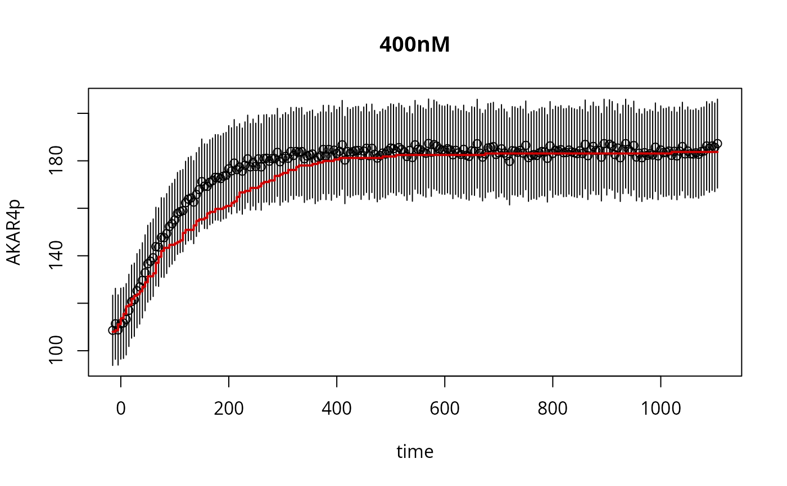

Simulate stochastic model
simstoch.RdSimulate a stochastic model generated with
uqsa::generateGillespieModel(), using the solver in this package.
Arguments
- ex
list of experiments, same as for the deterministic solvers.
- cmeModel
Either the cmeModel from as_cme, with a shared library path stored inside, or the path to the so file
- parMap
map from MCMC variable (or ABC variable) to model-parameters.
- time.out
in seconds
- nstep
number of reactions for early exit, defaults to unlimited (0)
Details
This will simulate all experimental conditions included in the list of experiments, including applying the inputs:
u <- experiments[[i]]$input - the input will be copied to the end of the model's internal parameter vector.
Like for deterministic models, we assume that there is a vector of
unknown parameter (a Markov chain variable, a vector of
optimization variables) and also known parameters (aka the input
parameters). The model itself does not distinguish between the two,
but one is the same between the experiments and one is different
between different experiments: modelParam <- c(mcmcParam, inputParam)
The path to the shared library, is required to contain at least one
slash in it, e.g.: "./model.so", "/tmp/Rsdkljhskjdhf/model.so" But,
not just "model.so", otherwise the shared library is interpreted as
a system library by dlopen() (it will not be found).
The number of reactions can be limited by nstep (micro time-steps
forward). The maximum can be set by performing a good simulation
and reading out the number of steps taken in that reference
simulation: y[[i]]$numSteps.
Examples
m <- model_from_tsv(uqsa_example("AKAR4"))
cme <- as_cme(m)
C <- generate_code(cme)
c_path(cme) <- write_c_code(C)
so_path(cme) <- shlib(cme)
ex <- experiments(m)
p0 <- values(m$Parameter)
s <- simstoch(ex,cme)
res <- s(p0)
require(errors)
#> Loading required package: errors
plot(as.errors(ex[[1]]$outputTimes),ex[[1]]$data,xlab="time",ylab="AKAR4p",main=names(ex)[1])
lines(ex[[1]]$outputTimes,res[[1]]$func,type="s",lwd=2,col="red3")
